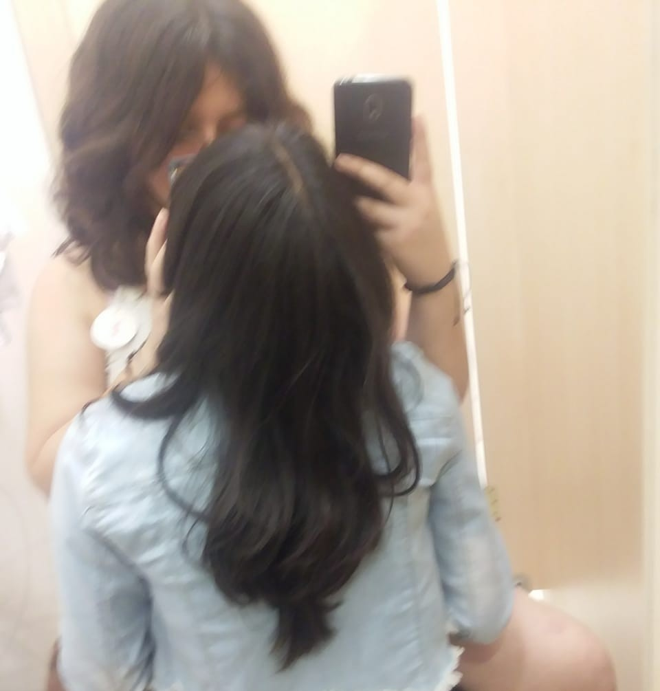

Te amo
Cómo no hacerlo? si eres lo mejor de mi vida
¿¿Como te explico que eres lo más lindo de mi fokin existencia??
Te amo, y eso ya lo sabes. Pero… ¿por qué te amo? La respuesta es sencilla. Puede que no seas mi primera pareja, pero sí eres mi primer y más dulce amor. La primera persona con la que conecté al instante, aquella que con un solo mensaje hizo que mi corazón se rindiera ❤🩹.
I want to love you in this and in all my possible lives ♡.
Eres esa estrella que brilla más que todas las demás ☆.
La flor que deslumbra con su belleza 💐.
La brisa fresca de la mañana que llena de calma y vida 🍃.
Hay algo en ti que hace que mi amor crezca cada día más 💗. Será tu personalidad tan única y espontánea kskskdk, esa sonrisa hermosa que ilumina aún más tu precioso rostro, o esa voz tan 🫦 kskdkd que se vuelve aún más 💗 cada vez que me dices cosas lindas.
Quiero que lo sepas, mi amor: amo cada parte de ti ❤. Tu físico es perfecto, tu vocecita es adorable, tu personalidad es increíble, y para mí, siempre has sido y serás maravillosa. Ante mis ojos (aunque miopes), eres la chica más hermosa que existe ❤🩹.
Siempre estaré para apoyarte en todo lo que desees lograr. Te ayudaré a elegir las mejores opciones, a pensar en nuevas ideas, y estaré a tu lado en cada paso del camino. Nunca estarás sola mientras yo esté contigo 💗.
En los momentos en los que sientas que todo se vuelve difícil, recuerda que aquí estoy. Quizás no sea la mejor ayuda del mundo, pero haré todo lo posible para que nunca te sientas sola. Haría hasta las cosas más vergonzosas solo para sacarte una sonrisa en tus días grises ❤🩹. No lo olvides, somos un equipo. Si tú caes, yo te levanto. Y si yo caigo… bueno, te reirás un rato y luego me ayudarás a levantarme kskdkd 💗.
¿Sabías que las nutrias se toman de las manos cuando duermen para que la corriente no las separe? Pues seamos como ellas, siempre juntas.
And if we live a thousand years, I will love you for a thousand years 💗.



En fin... amo todo lo que viene de tí
Video gei bdjkcf
| Apodos | % de lindura | razones |
|---|---|---|
| cerezita | 100% | amo las cerezas tanto como te amo a tí |
| amor | 10000000% | lo que siento por ti |
| cielito | 10000% | Por que su belleza me recuerda a la tuya |
Cómo no hacerlo? si eres lo mejor de mi vida
Desde el primer momento en que te ví dije "esta será mi mujer"
Eres la cosita mas bella que llena de alegria mi vida
Eres alguien muy especial para mí, y te amo con la misma intensidad con la que Amity cuida a Luz ❤🩹, como Mon adora a Sam ❤, como Robleis quiere a su novio, y tanto como Tom ama a Zendaya 💗. Así como tú sientes ese amor por BTS c:, yo lo siento por ti, igual que mi cariño por Lana del Rey 💗.
Cada vez que escucho una canción de amor, mi mente te trae de inmediato, y me pierdo en los escenarios más románticos que podría imaginar con esa música de fondo 😔. A veces siento que parezco esquizo ksksk, pero es inevitable soñarte en cada melodía.
Quiero compartir muchas experiencias contigo, mi amor 💗. Contigo me siento completamente libre, sin miedos ni inseguridades. Ese día que estuvimos juntas, no hubo dudas en mí. No me preocupé por nada, ni por mi cuerpo, ni por cómo me veía. Solo existía el momento, el aquí y ahora, donde éramos solo tú y yo… Amé cada beso, cada caricia, cada palabra susurrada, y solo deseaba que el tiempo se detuviera para quedarnos en ese instante eterno 💗.
Y cada noche, cuando las estrellas iluminan el cielo, pienso en ti, mi amor. ¿Qué me hiciste? No sales de mi mente💗.
Si pudiera elegir entre una canasta llena de cerezas o tú, terminaría en una esquina llorando contigo porque no tuve las cerezas, pero al mismo tiempo, feliz de tener tus besitos 💗.
No hay suficientes palabras para expresar todo lo que siento por ti, pero si tuviera que resumirlo en una sola frase, sería: "Quizás estoy demasiado ocupada siendo tuya como para enamorarme de alguien más♡".
Eres mi todo, mi mundo, mi vida entera, y te amo con cada fibra de mi ser 💗. Prometo trabajar duro para hacer realidad todos y cada uno de tus sueños, desde ese puestito de batidos en mi cafetería ksksk, hasta el concierto de tus artistas favoritos.
Déjame conocerte aún más, entender lo que te gusta, lo que te molesta, lo que te hiere y lo que te hace feliz. Quiero ser la mejor versión de mí para ti, para cuidar y proteger ese hermoso corazón que tienes ❤🩹.
I love you so much, my little brown sugar cube 💗.
© Te amo Michelle